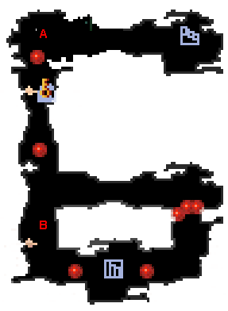
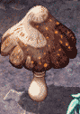
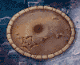
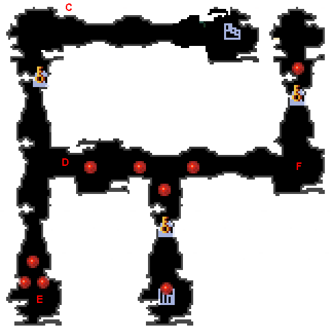
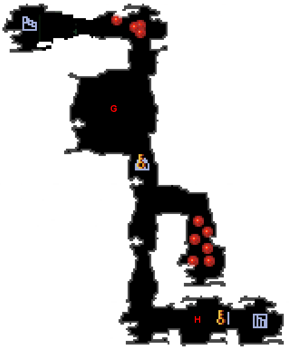
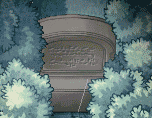
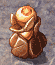

| 概要 | 情報 | アイテム一覧 |
| 敵キャラ一覧 | ステージ一覧 | 夢幻迷宮について |
| 攻略チャート | Zwei!! 攻略へ |
| ステージ選択へ |
クロップ洞窟 Lv.9
|  | |
| A   |
A地点ではキノコを苗床へ移動させる必要があります。 キノコに近づくと敵がたくさん現れるので注意しましょう。 |
| B | B地点には岩があります。爆弾で壊しておきましょう。 |
|  | |
| C |
C地点には大砲が待ちかまえています。 また、敵もたくさん現れるので注意が必要です。 敵を素早く倒し、ボタンスイッチをONにして先に進みましょう。 |
| D | D地点へ行くと、敵がたくさん現れます。 |
| E |
E地点の苗床にキノコを置くと、宝箱が出現します。 |
| F |
F地点のボタンスイッチをONにすると、風船が自分の周囲を取り囲みます。 敵も何匹か現れるので素早く逃げ道を確保しましょう。 隣接していれば風船越しからでも敵に攻撃はできます。 |
|  | |
| G  |
G地点の墓石を壊すと敵が飛び出してきます。 連射ロックをONにしておくといいです。 |
| H  |
H地点のろうそくをともすと敵がたくさん現れます。 火の属性の攻撃、光の属性の攻撃、ピピロの通常攻撃で点火できます。 |
| ステージ選択へ |
| 概要 | 情報 | アイテム一覧 |
| 敵キャラ一覧 | ステージ一覧 | 夢幻迷宮について |
| 攻略チャート | Zwei!! 攻略へ |
Zwei!!
| 目次へ戻る | ページの上部へ |